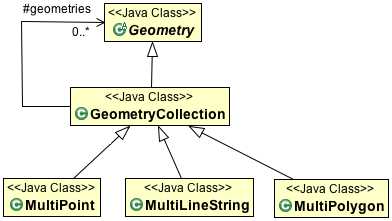
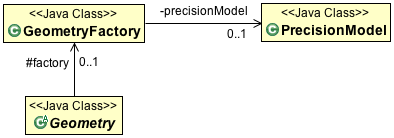

Geometry¶
To create a Geometry object we make use of the GeometryFactory provided by JTS. GeometryFactory has a bunch of create methods that take Coordinate instances (and arrays) and wrap them up in the appropriate instance of Geometry.
The OGC Simple Features for SQL specification implemented by JTS works with Point, LineString and Polygon.

Each Geometry can be contained in an Envelope (acting as a bounding box that contains all the geometry coordinates).
The OGC Simple Feature for SQL specification also provides support for GeometryCollections. GeometryCollections are themselves considered a Geometry.
You can create your own GeometryFactory with a specific PrecisionModel and CoordinateSequenceFactory.
Note
These “advanced” configuration options are interest if you need to take charge of how the coordinates are stored (perhaps as floats rather than doubles?) The two concepts work together: if you are storing your coordinates in an array of floats, then JTS only needs to consider float precision during calculations.
The GeometryFactory created by default works just fine.
GeoTools extends these core Geometry classes to allow support for curves. These implementations generate coordinates allowing them to act as normal JTS Geometries (as required for JTS Operations).

The linearization process used to generate coordinates makes use of the control points defining the curve and a tolerance provided by a CurvedGeometryFactory.
Creating a Point¶
This time we are using a JTS GeometryFactory, although you can create one yourself (if you want to fiddle with Precision}} there is a global one available using the FactoryFinder.:
GeometryFactory geometryFactory = JTSFactoryFinder.getGeometryFactory();
Coordinate coord = new Coordinate(1, 1);
Point point = geometryFactory.createPoint(coord);
“Well Known Text” is a simple text format defined by the Simple Feature for SQL specification:
GeometryFactory geometryFactory = JTSFactoryFinder.getGeometryFactory();
WKTReader reader = new WKTReader(geometryFactory);
Point point = (Point) reader.read("POINT (1 1)");
If you need to represent many points (perhaps fence posts forming a fence) you can use use a MultiPoint.
Creating a LineString¶
The following makes a line string in the shape of a check mark:
GeometryFactory geometryFactory = JTSFactoryFinder.getGeometryFactory();
Coordinate[] coords =
new Coordinate[] {new Coordinate(0, 2), new Coordinate(2, 0), new Coordinate(8, 6) };
LineString line = geometryFactory.createLineString(coordinates);
Alternative - Reading a LineString from WKT:
GeometryFactory geometryFactory = JTSFactoryFinder.getGeometryFactory();
WKTReader reader = new WKTReader( geometryFactory );
LineString line = (LineString) reader.read("LINESTRING(0 2, 2 0, 8 6)");
If you need to represent a line with gaps in it you can use a MultiLineString.
Creating a Polygon¶
The following makes a Polygon in the shape of a square:
GeometryFactory geometryFactory = JTSFactoryFinder.getGeometryFactory();
Coordinate[] coords =
new Coordinate[] {new Coordinate(4, 0), new Coordinate(2, 2),
new Coordinate(4, 4), new Coordinate(6, 2), new Coordinate(4, 0) };
LinearRing ring = geometryFactory.createLinearRing( coords );
LinearRing holes[] = null; // use LinearRing[] to represent holes
Polygon polygon = geometryFactory.createPolygon(ring, holes );
Alternative - Reading a Polygon from WKT:
GeometryFactory geometryFactory = JTSFactoryFinder.getGeometryFactory( null );
WKTReader reader = new WKTReader( geometryFactory );
Polygon polygon = (Polygon) reader.read("POLYGON((20 10, 30 0, 40 10, 30 20, 20 10))");
You can also create a Polygon will holes in it. And once again use a MultiPolygon to represent a single geometry made up of distinct shapes.
Creating CircularString¶
To create a CircularString (or a CircularRing) use the GeoTools CurvedGeometryFactory. When setting up a CurvedGeometryFactory the provided tolerance will be used during linearization:
GeometryFactory geometryFactory = JTSFactoryFinder.getGeometryFactory();
CurvedGeometryFactory curvedFactory = new CurvedGeometryFactory(geometryFactory,Double.MAX_VALUE);
PackedCoordinateSequence coords = new PackedCoordinateSequence.Double(
new double[]{10,14,6,10,14,10}, 2 );
CircularString arc = (CircularString) curvedFactory.createCurvedGeometry(coords);
The circle arc is defined between coordinates 10,14 and 14, 10 passing through point 6,10. The example uses a PackedCoordianteSequence allowing an array of doubles to be used directly. Curve support is limited to 2D coordinates. A CircularLineString is returned in this case, a CircularRing would be produced if two or more curves were provided form a closed ring.
Reading a circular arc from WKT:
GeometryFactory geometryFactory = JTSFactoryFinder.getGeometryFactory();
CurvedGeometryFactory curvedfactory = new CurvedGeometryFactory(Double.MAX_VALUE);
WKTReader2 reader = new WKTReader2(curvedfactory);
CircularString arc = (CircularString) reader.read("CIRCULARSTRING(10 14,6 10,14 10)");
A CompoundCurve (or closed CompoundRing) consists mix of CircularString and/or plain LineString components.
Custom Curves¶
The JTS Topology Suite does not have any constructs to represent a “curve” or “circle” - GeoTools added that as an extension. The mathematics used by JTS is strictly limited to geometry made up of straight (ie linear) lines.
The GeoTools curve implementations rely on using control points to define a curve, and converting it to a straight lines at the last possible moment.
Curves can also be produced by hand using a little bit of math.
Creating a Circle:
private static Geometry createCircle(double x, double y, final double RADIUS) {
GeometricShapeFactory shapeFactory = new GeometricShapeFactory();
shapeFactory.setNumPoints(32);
shapeFactory.setCentre(new Coordinate(x, y));
shapeFactory.setSize(RADIUS * 2);
return shapeFactory.createCircle();
}
Even though “GeometricShapeFactory” is provided out of the box from JTS; there is nothing fancy about the code. It creates a series of coordinates in a circle.
Another approach is to create a curve or shape object with one of Java’s handy Shape classes and then extract the coordinates from that object to create your geometry.
Arcs without the maths:
private static Geometry createBezierCurve(Coordinate start,
Coordinate end,
Coordinate ctrlPoint1,
Coordinate ctrlPoint2
double smooth) {
Shape curve = new CubicCurve2D.Double(
start.x, start.y,
ctrlPoint1.x, ctrlPoint1.y,
ctrlPoint2.x, ctrlPoint2.y,
end.x, end.y);
// the value of the smooth arg determines how closely the line
// segments between points approximate the smooth curve
// (see javadocs for Shape.getPathIterator method)
PathIterator iter = curve.getPathIterator(null, smooth);
// a length 6 array is required for the iterator
double[] iterBuf = new double[6];
List<Coordinate> coords = new ArrayList<Coordinate>();
while (!iter.isDone()) {
iter.currentSegment(iterBuf);
coords.add(new Coordinate(buf[0], buf[1]);
iter.next();
}
GeometryFactory gf = new GeometryFactory();
return gf.createLineString(coords.toArray(new Coordinate[coords.size()]));
}
Here’s an example of some randomly orientated and shaped curves generated in this way...
Sometimes you need to generate a smooth curve that is guaranteed to pass through a specified set of points. The tried and true approach here is to use a spline function. This generates a set of polynomial (cubic) curves, each of which fits a part of the data and joins smoothly to its neighbouring curves.
Splines:
public Geometry splineInterpolatePoints(double[] xPoints, double[] yPoints) {
/*
* First we create a LineString of segments with the
* input points as vertices.
*/
final int N = xPoints.length;
Coordinate[] coords = new Coordinate[N];
for (int i = 0; i < N; i++) {
coords[i] = new Coordinate(xPoints[i], yPoints[i]);
}
GeometryFactory gf = new GeometryFactory();
LineString line = gf.createLineString(coords);
/*
* Now we use the GeoTools JTS utility class to smooth the
* line. The returned Geometry will have all of the vertices
* of the input line plus extra vertices tracing a spline
* curve. The second argument is the 'fit' parameter which
* can be in the range 0 (loose fit) to 1 (tightest fit).
*/
return JTS.smooth(line, 0.0);
}
Here is an example of this in use:
Example smoothing a polygon:
WKTReader reader = new WKTReader();
Geometry tShape = reader.read(
"POLYGON((10 0, 10 20, 0 20, 0 30, 30 30, 30 20, 20 20, 20 0, 10 0))");
Geometry tLoose = JTS.smooth(tShape, 0.0);
Geometry tTighter = JTS.smooth(tShape, 0.75);
Here is the resulting image:
Geometry¶
Using Geometry is pretty straight forward, although a little intimidating when starting out due to the number of methods.
Some summary information is available:
- getArea() - area returned in the same units as the coordinates (be careful of lat/lon data!)
- getCentroid() - the centre of the geometry
- getEnvelope() - returns a geometry which is probably not what you wanted
- getEnvelopeInternal() - this returns a useful Envelope
- getInteriorPoint() - the centre of the geometry (that is actually on the geometry)
- getDimension()
Geometry relationships are represented by the following functions returning true or false:
- disjoint(Geometry) - same as “not” intersects
- touches(Geometry) - geometry have to just touch, crossing or overlap will not work
- intersects(Geometry)
- crosses(Geometry)
- within(Geometry) - geometry has to be full inside
- contains(Geometry)
- overlaps(Geometry) - has to actually overlap the edge, being within or touching will not work
- covers(Geometry)
- coveredBy(Geometry)
- relate(Geometry, String) - allows general check of relationship see dim9 page
- relate(Geometry)
To actually determine a shape based on two geometry:
- intersection(Geometry)
- union(Geometry)
- difference(Geometry)
- symDifference(Geometry)
Some of the most helpful functions are:
- distance( Geometry )
- buffer(double) - used to buffer the edge of a geometry to produce a polygon
- union() - used on a geometry collection to produce a single geometry
The three most difficult methods are here (they will be discussed in detail):
- equals( Object ) - normal Java equals which checks that the two objects are the same instance
- equals( Geometry ) - checks if the geometry is the same shape
- equalsExact( Geometry ) - check if the data structure is the same
There are some book keeping methods to help discovery how the geometry was constructed:
- getGeometryFactory()
- getPreceisionModel()
- toText() - the WKT representation of the Geometry
- getGeoemtryType() - factory method called (ie “point”, “linestring”, etc..)
A couple of methods are there to store your developer information:
- getSRID() - stores the “spatial reference id”, used as an external key when working with databases
- getUserData() - intended to be used by developers, a best practice is to store a java.util.Map. GeoTools will occasionally use this field to store a “srsName” or full CoordianteReferenceSystem.
Geometries Enum¶
Code that makes use of Geometry ends up doing a fair amount of “instanceof” testing in order to determine what kind of Geometry is being used (to take appropriate action).
We have an enumeration defined to help out in this case:
public boolean hit(Point point, Geometry geometry) { final double MAX_DISTANCE = 0.001; switch (Geometries.get(geometry)) { case POINT: case MULTIPOINT: case LINESTRING: case MULTILINESTRING: // Test if p is within a threshold distance return geometry.isWithinDistance(point, MAX_DISTANCE); case POLYGON: case MULTIPOLYGON: // Test if the polygonal geometry contains p return geometry.contains(point); default: // For simplicity we just assume distance check will work for other // types (e.g. GeometryCollection) in this example return geometry.isWithinDistance(point, MAX_DISTANCE); } }
PrecisionModel¶
Out of the box JTS works with a default double precision model. Configuring your GeometryFactory with a PrecisionModel allows you to work at a different resolution than this default.
PrecisionModel forms the heart of “numerical stability” when working with Geometry. When working with large values the mathematics built into Java are not very accurate. By explicitly capturing the “round-off” process in a PrecisionModel JTS allows to manage these sorts of errors and make an appropriate tradeoff of speed vs accuracy for your work.
Round-off often occur, even when working in double precision.
Especially if you are working in a coordinate system with big numbers and you’re a long way from the origin.
The other reason to look at PrecisionModel is to ensure it matches your final use for your data. If you know you are only going to display an answer on the screen, you may be able to get by with reduced precision.
By matching the PrecisionModel with your expected use, certain long running operations (that need to converge on an answer) can stop when they have reached the level of detail you expect. No sense doing extra work for more significant digits if the result is going to be rounded off at the end of the day.
The following code example takes into account that the location being passed in was only supplied as a floating point value x/y. We handle this by creating this test point with a GeometryFactory that takes a PrecisionModel argument. The test point will be flagged as having a certain limited precision and all JTS operations will take this into account.
There are various ways of specifying a PrecisionModel but here we base it on the number of decimal places to use for coordinate comparisons.:
private boolean polyContains(Polygon poly, float x, float y, int numDecPlaces) {
double scale = Math.pow(10, numDecPlaces);
PrecisionModel pm = new PrecisionModel(scale);
GeometryFactory gf = new GeometryFactory(pm);
Geometry testPoint = gf.createPoint(new Coordinate(x, y));
return poly.contains(testPoint);
}
You can also define the PrecisionModel using a couple of constants:
pm = new PrecisionModel( PrecisionModel.Type.FIXED ); // fixed decimal point
pm = new PrecisionModel( PrecisionModel.Type.FLOATING ); // for Java double
pm = new PrecisionModel( PrecisionModel.Type.FLOATING_SINGLE ); // for Java float
This is an advanced feature that is not often used.
CoordinateSequence¶
You may wish to provide a custom CoordinateSequenceFactory for reasons of efficiency and/or reducing memory use.
Internally Geometry often works with Coordinate[]. However many of the spatial formats used for JTS will store values as a flat doube[] or float[] for efficiency. By implementing a CoordinateSequenceFactory GeoTools can teach JTS how to handle the values directly out of a shapefile for example.
This is an advanced feature that is not often used.
JTS¶
Some of the code examples used above reference the JTS utility class. This class is provided by gt-api module; and contains many helpful methods for working with Geometry.